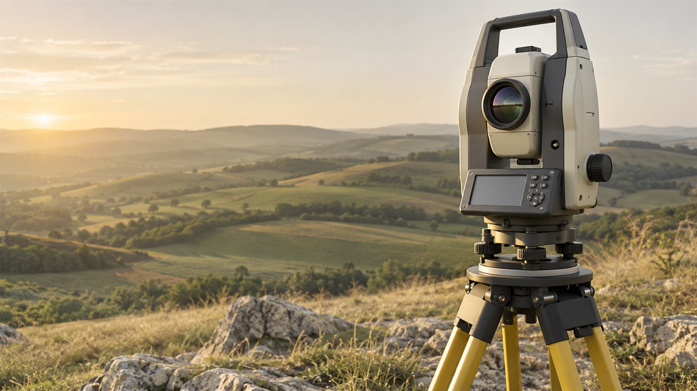
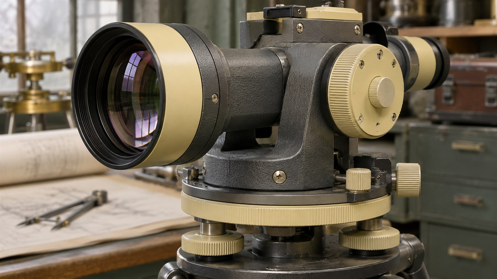
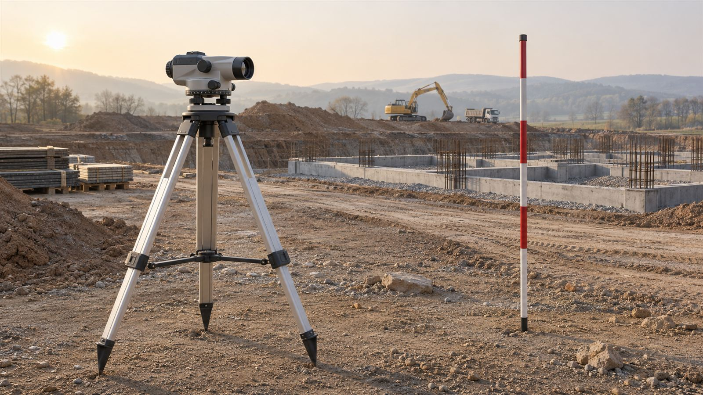

Измерить
- Рекогносцировка участка
- Проверка исходной основы
- Съёмка и полевой контроль

Инженерная геодезия
для проектирования,
строительства и контроля.


В какой основе выполнена работа и как её использовать дальше.
Что измерено, что предоставлено заказчиком и какие сведения требуют уточнения.
Чертежи, цифровые данные и пояснения под следующий этап проекта.
Сначала измерение. Затем решение.
Пример — концепт для портфолио
Раздел для подтверждённых документов применяемого оборудования. Действующие свидетельства и заводские номера не приведены.
Необходимый комплект проверяют по виду работ и требованиям проекта. Членство в СРО, лицензии и действующие допуски в концепте не заявлены.
Условный полевой отдел
field@otmetka-mestnosti.example
Опишите участок и назначение работ. Границы и исходную основу согласуем перед выездом.
Пример — концепт для портфолио. Изображения созданы ИИ и показывают вымышленные объекты.